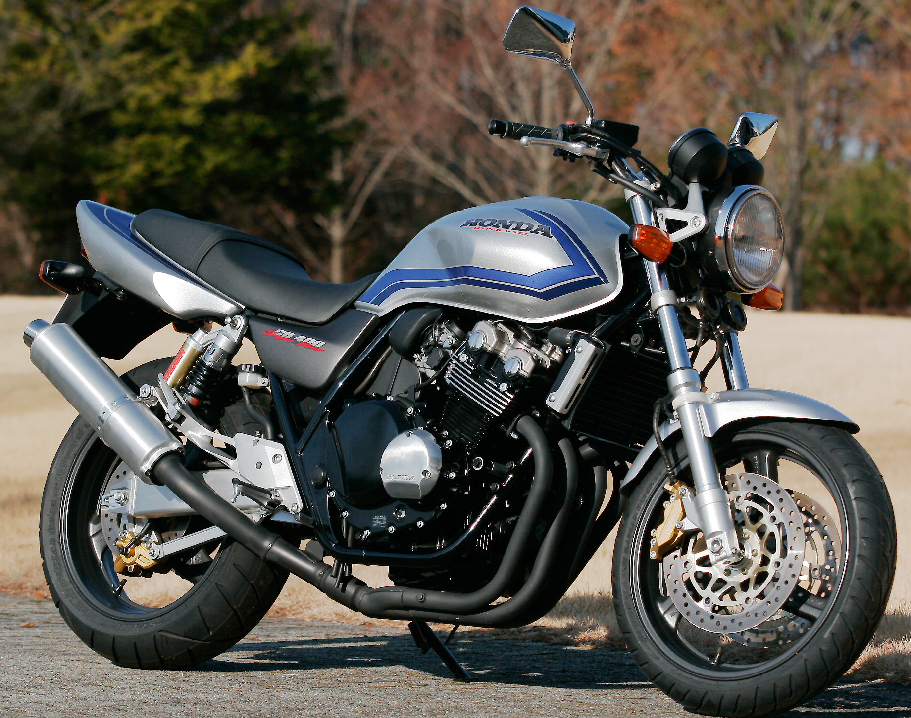
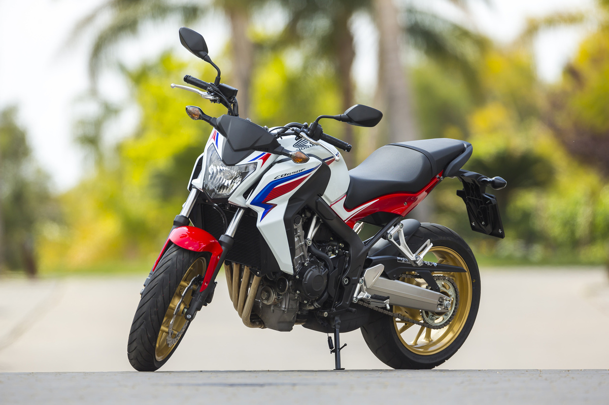
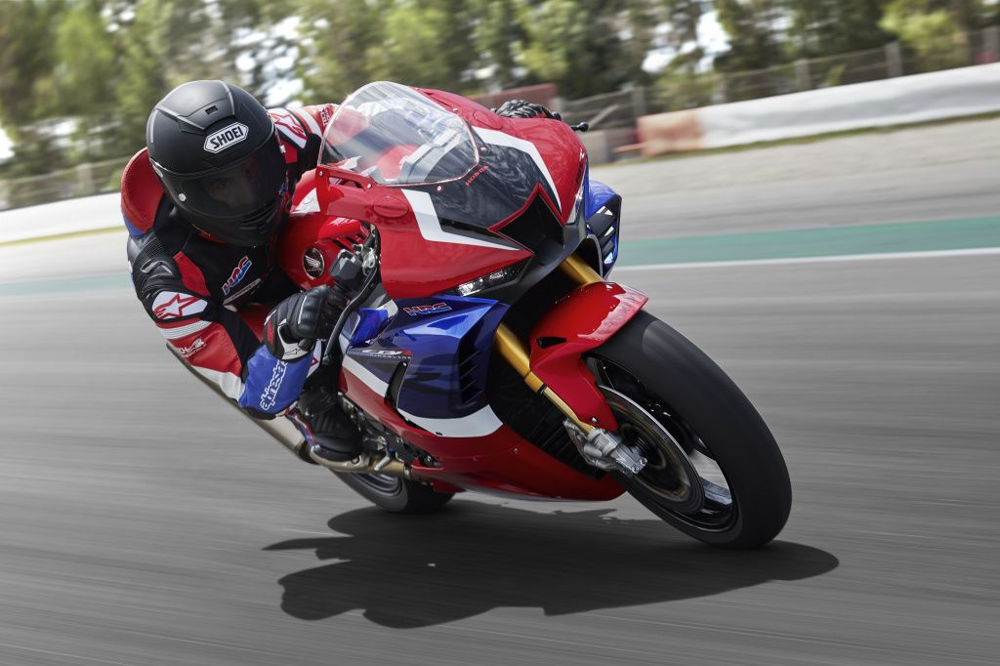
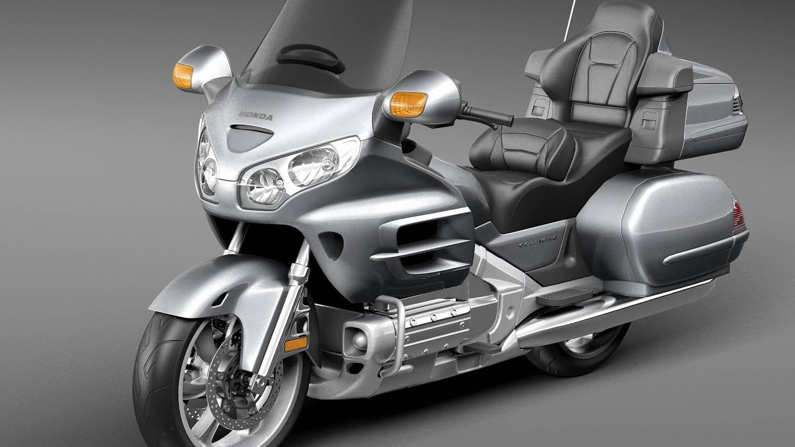
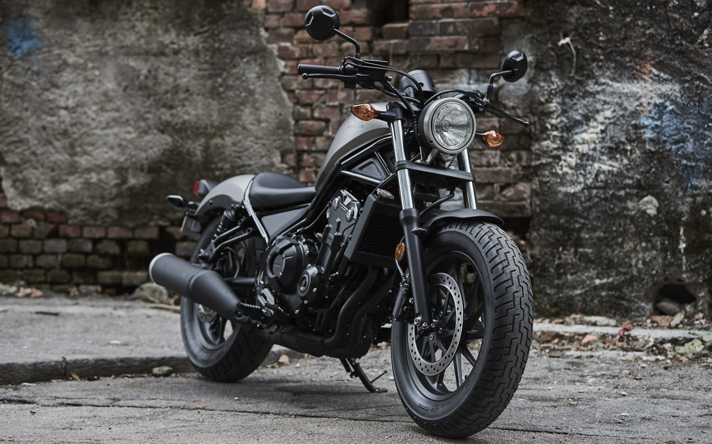
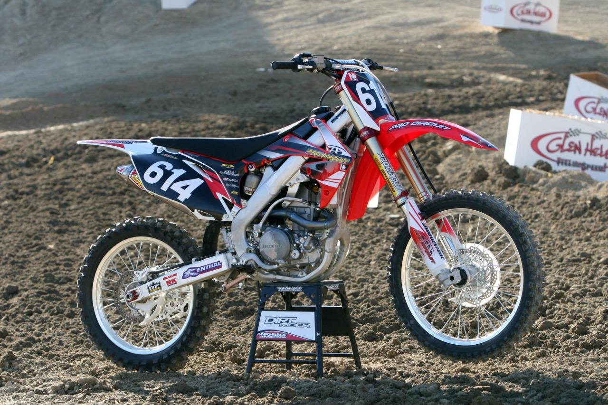

Компания Honda была образована в конце 40-х годов прошлого века, когда послевоенная Япония предпринимала все усилия, чтобы восстановиться из руин 2-й мировой войны. В это время основатель компании Соитиро Хонда (Soichiro Honda) основал небольшой бизнес по производству поршневых колец, но уже через год стал собирать первые дешевые мопеды. Соитиро Хонда с детства овладело желание заниматься конструированием автомобилей и мотоциклов и его гений во всей красе раскрылся в 1960 годах - в период расцвета компании, когда мотоциклы марки Honda стали завоевывать первые награды на гоночных треках. Сегодня компания Honda - признанный лидер в мире мото, который выпускает самые передовые модели двухколесной техники.
Модельный ряд мотоциклов достаточно большой, в данной статье представлены самые популярные модели в своих категориях:
Honda CB 400 SF – легендарный дорожник Super Four, который начал историю в 1992, и выпускается
по сей день, совершенствуясь, приобретая новые очертания.53-силовой мотор разгоняет 200-килограмовую
конструкцию до 180 км/час.

Honda CB650F – тот случай, когда купить мотоцикл нейкед может и начинающий байкер. Причина
в бюджетности, легкости и простоте управления этой моделью. Байк выглядит стильно за счет рамы диагональной
формы. Владелец «железного коня» получает 650-кубовый мотор с жидкостным охлаждением, тормоза с ABS,
6-ступенчатую коробку передач. Тем, кто ищет более динамичный и брутальный стритфайтер, стоит обратить внимание
на CB650R Neo Sports Cafe, в котором производительность двигателя увеличена на 5%, реализован плавный прирост
мощности, на 1000 об/мин увеличен крутящий момент.

Модель спортивного мотоцикла Honda CBR1000RR Fireblade появилась на рынке в 2004 году, придя на смену Honda
CBR954RR Fireblade. В отличие от прошлой версии, новая модель получила целый ряд технических отличий и черты
гоночного прототипа RC211V - новая рама, подвески и двигатель, новая тормозная система с радиальными суппортами,
электронный рулевой демпфер (Honda Electronic Steering Damper - HESD), инжектор с двойными дроссельными заслонками
(Dual Stage Fuel Injection - DSFI)

HONDA Gold Wing — легенда туристических мото от Хонды невероятно комфортабельна. Мощность
6-цилиндрового двигателя, удобное широкое пассажирское сиденье для путешествий вдвоём, низкие подножки — всё,
несомненно, стоит внимания, оказываемого надёжному туристическому байку.

Начиная с первой в истории модели Rebel, представленной в 1986 году, байк остался верен своей природе. Honda
сохранила низкую высоту сиденья, низкий центр тяжести и общую простоту управления, что делает Rebel неизменным
фаворитом среди большинства. Rebel 500, пожалуй, самая популярная модель, известная прежде всего тем, что
представляет собой фирменный затемненный ретро-стиль, удобную для города мощность, толстые шины и легкое шасси.

HONDA CRF 250R – В основе модели 4-тактный 1-цилиндровый двигатель с системой жидкостного охлаждения и мощностью
44 л.с. КПП – 5-спупенчатая, механическая. Тормозная система – дисковая. Рама – алюминиевая. С начала выхода на
рынок модель претерпела несколько значительных изменений, в том числе и в конструкции двигателя. На сегодняшний
день байк можно охарактеризовать как мощный, хорошо управляемый, оснащенный хорошей регулируемой подвеской.

| МОДЕЛЬ | МОЩНОСТЬ | РАЗГОН ДО 100 КМ/Ч | СТОИМОСТЬ |
|---|---|---|---|
| Honda CB400SF | 53 л.с. | 4.5 с. | от 884 000 р. |
| Honda CB650F | 87 л.с. | 3.9 с. | от 1 154 930 р. |
| Honda CBR100RR | 178 л.с. | 2.7 с. | от 2 249 900 р. |
| Honda Gold Wing | 126 л.с. | 4.1 с. | от 3 059 000 р. |
| Honda Rebel500 | 47 л.с. | 5.9 с. | от 837 000 р. |
| Honda CRF250R | 44 л.с. | 5.1 с. | от 538 900 р. |